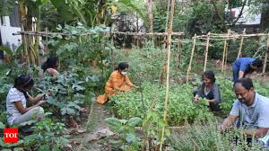

Local Community Garden Thrives Despite Urban Growth

A small but thriving community garden is flourishing amidst the rapid urban development in the city. Located in the heart of downtown, this green oasis provides a peaceful retreat for residents and a space to grow fresh produce.
The garden, run entirely by volunteers, offers a variety of fruits, vegetables, and herbs. It has become a popular spot for locals to gather, share gardening tips, and enjoy nature.
“It's amazing how much this garden has brought the community together,” says longtime volunteer Sarah Lee. “In a city that’s always growing, it’s nice to have a place that stays green.”
As the city continues to expand, the future of the garden remains uncertain. However, the community is determined to protect this green space and ensure it remains a part of the neighborhood for years to come.